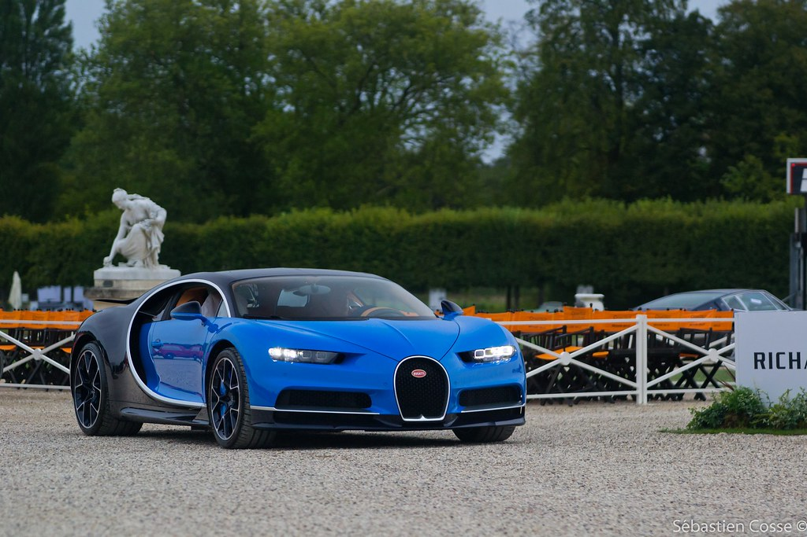
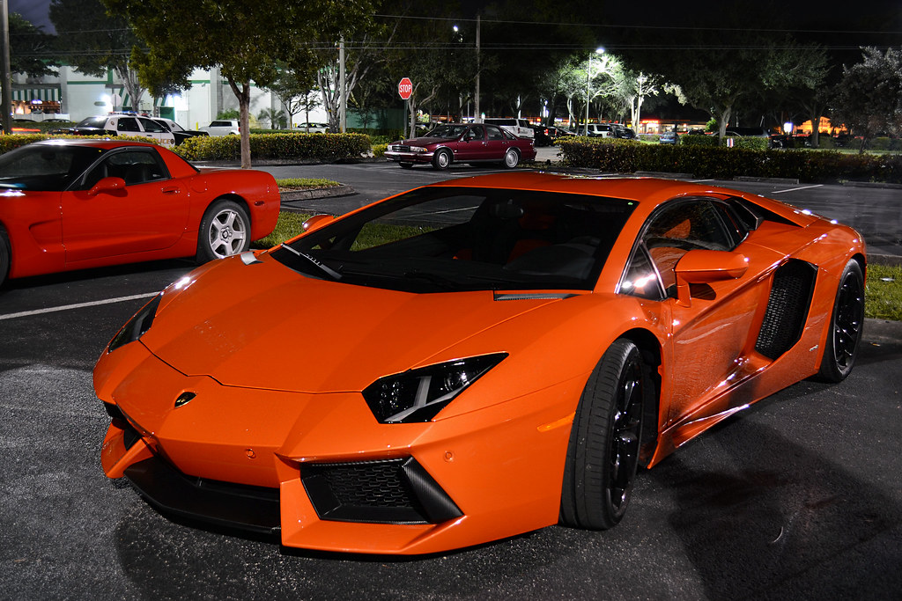
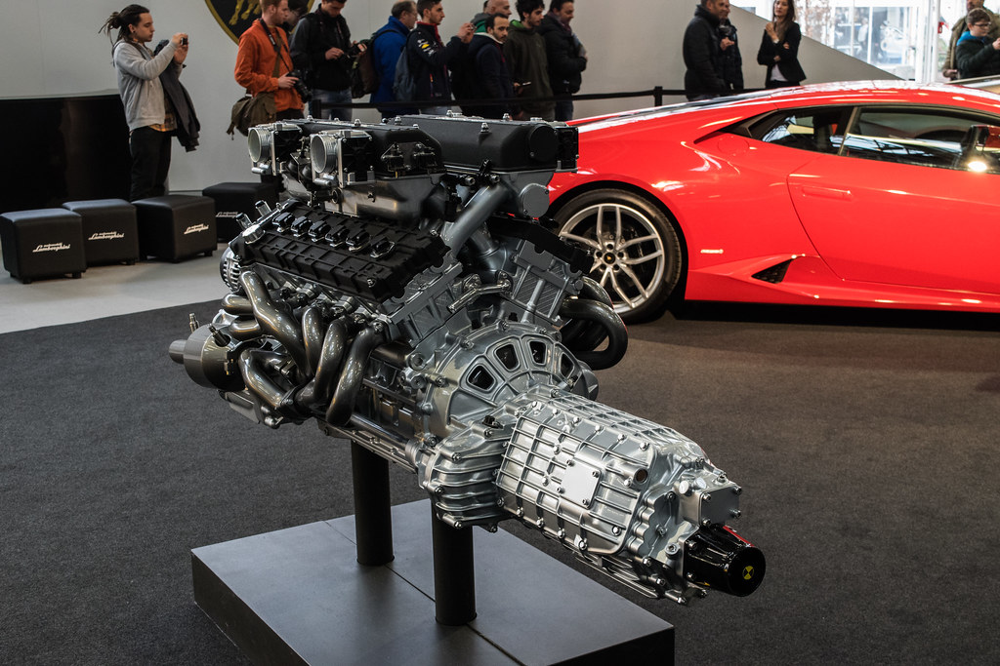
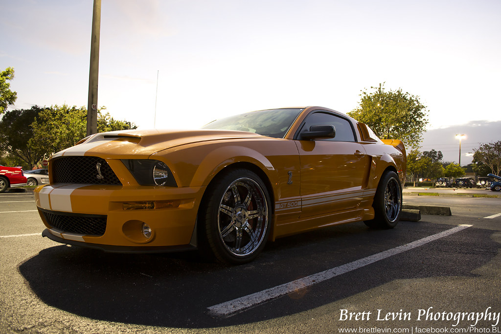

My favorite Cars
Bugatti Chiron

One of my favorite car is the Bugatti Chiron
Lamborghini Aventador

My second favorite is the Lamborghini Aventador
Naturally Aspirated V12

This car has an amazing naturally aspirated V12 engine. Meaning it does not use a turbo or supercharger to get its power. This engine sounds amazing and raw because if it.
Ford Mustang GT500

I love this car too because it has a supercharged V8 engine and it is rear wheel drive. These cars often have too much power for the amount of grip they have, which makes them fun to drive. I also love the color yellow on the car because it makes you stand out, and with a car like this, you'd want to.